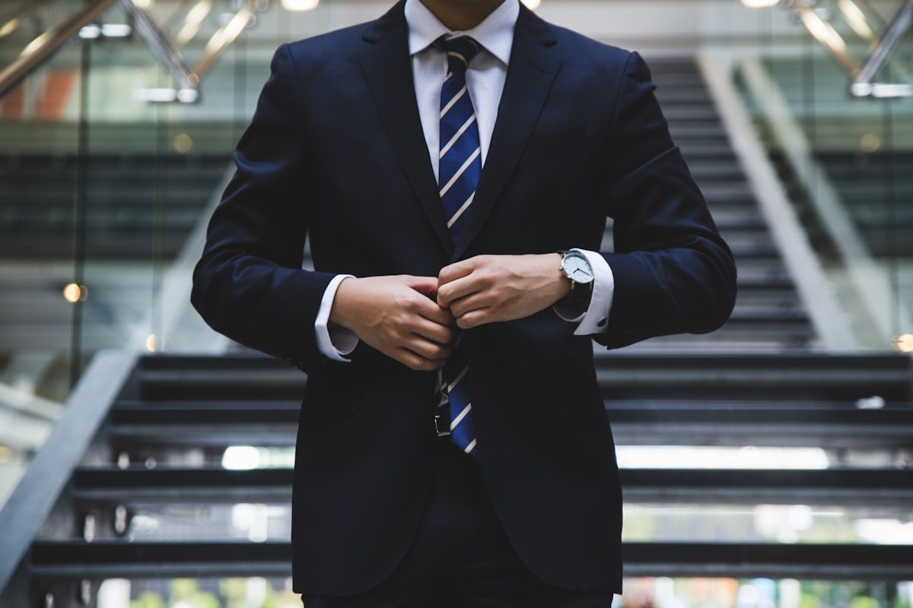
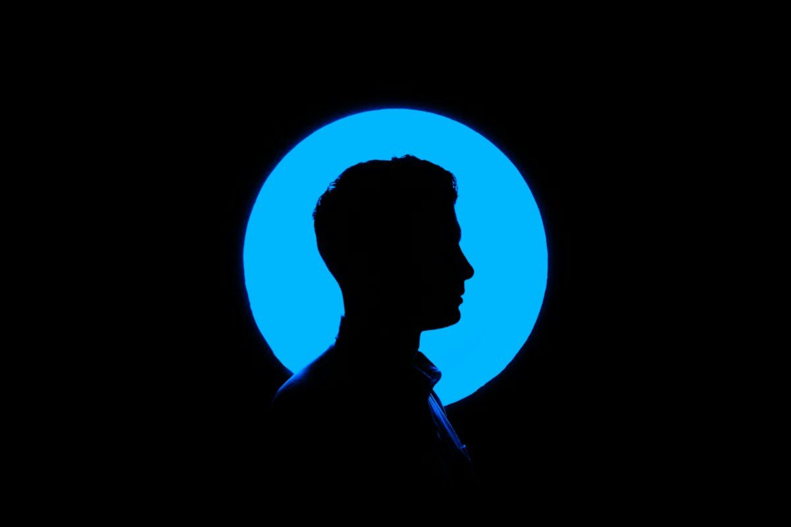

The House of Mechanical Hour
Preserving the purity of mechanical timekeeping in an age of automated consumer technology.
Forged in the Snows of Vallée de Joux
Mechanical Hour was established in Geneva by master horologist Henri Vacheron and micromechanical engineer François Delacroix. Having spent decades inside the secretive complications departments of Switzerland's most venerable houses, they witnessed the insidious creep of industrialization: laser-cut balances, stamped gears, machine-applied beveling, and synthetic polymers displacing centuries of noble horological craft.
Our manufacture was founded as an unyielding sanctuary for pure hand watchmaking. In our workshops overlooking the Lac de Joux, timepieces are born one by one. There are no automated assembly robots, no outsourced movement blanks, and no quarterly production quotas. We produce fewer than one hundred watches per year, each signed by the master watchmaker whose hands brought it to life.

The Pillars of Our Horology
01. 100% In-House Movements
Every plate, bridge, wheel, pinion, and escapement component is designed, machined, and finished in our own workshops.
02. Authentic Hand Finishing
Every bevel is hand-carved with gentian wood paste; every screw is mirror-polished on tin blocks to achieve black polish perfection.
03. Chronometric Excellence
Variable-inertia free-sprung balances regulated across six positions to exceed official Swiss chronometer standards.
04. Perpetual Restorability
We archive complete engineering tooling to guarantee that any Mechanical Hour timepiece can be serviced centuries into the future.

The Microscopic Poetry of the Artisan's Eye
A high-precision balance spring measures barely one-fourth the thickness of a human hair. Its performance depends on the artisan's microscopic intuition: curving the terminal coil by a fraction of a degree, adjusting the poising screws with tweezers, and listening to the rhythmic acoustic beat of the escapement.
This intimate union of human dexterity and micromechanical science cannot be replicated by computers. When you wear a Mechanical Hour watch, you carry the heartbeat of an artisan who poured weeks of solitary patience into a mechanism that will outlive kingdoms.